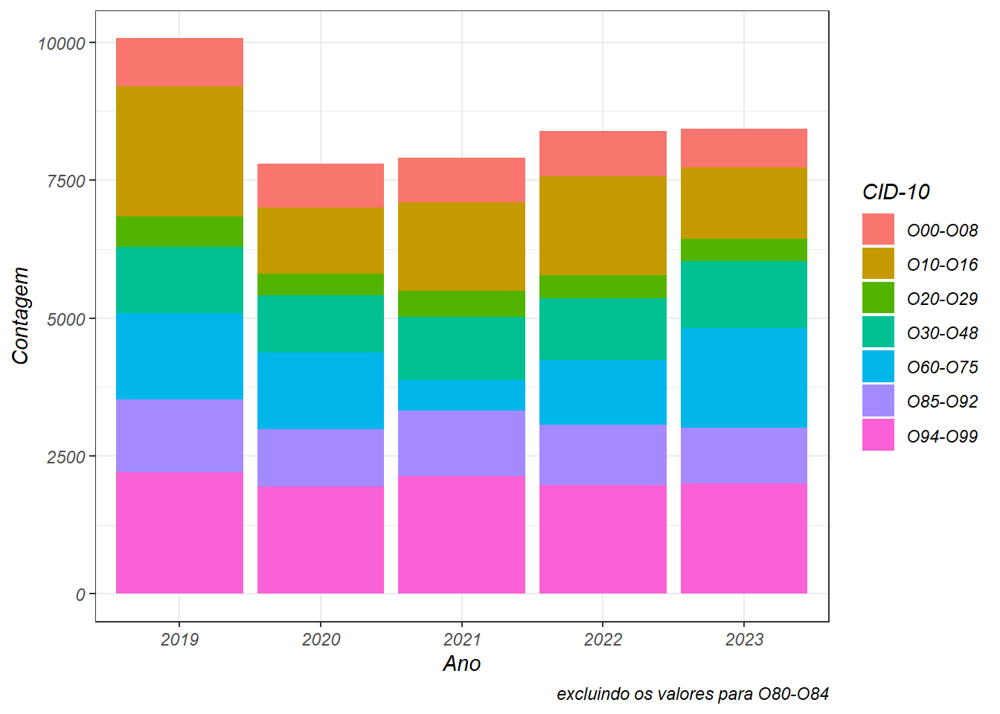

Essa segmentação foi feita com base no capítulo XV do CID-10, que está relacionado com gravidez, parto e puerpério:
Code
gravidez = sih_rd %>%mutate(cid_gravida =case_when(grepl("^O0[0:8]", diag_princ) ==TRUE~"O00-O08",grepl("^O1[0:6]", diag_princ) ==TRUE~"O10-O16",grepl("^O2[0:9]", diag_princ) ==TRUE~"O20-O29",grepl("^O3[0:9]|^O4[0:8]", diag_princ) ==TRUE~"O30-O48",grepl("^O6[0:9]|^O7[0:5]", diag_princ) ==TRUE~"O60-O75",grepl("^O8[0:4]", diag_princ) ==TRUE~"O80-O84",grepl("^O8[5:9]|^O9[0:2]", diag_princ) ==TRUE~"O85-O92",grepl("^O9[4:9]", diag_princ) ==TRUE~"O94-O99") ) %>%mutate(cid_gravida =fct_relevel(cid_gravida, c("O00-O08", "O10-O16", "O20-O29", "O30-O48", "O60-O75", "O80-O84","O85-O92", "O94-O99"))) %>%filter(!is.na(cid_gravida) ==TRUE) %>%select(n_aih, ano_cmpt, sexo, nasc, dt_inter, cep, cnes, marca_uti, morte, cobranca, diag_princ, diagsec1:diagsec9, cid_gravida) %>%rename("cid"= diag_princ) %>%left_join(., cid10::cid_subcat[c(1,5)]) %>%relocate(descricao, .after = cid) %>%mutate(descricao =ifelse(cid =="O00", "Gravidez ectópica", descricao)) %>%mutate(descricao =ifelse(cid =="O08", "Complicações conseqüentes a aborto e gravidez ectópica ou molar", descricao)) %>%mutate(descricao =ifelse(cid =="O10", "Hipertensão pré-existente complicando a gravidez, o parto e o puerpério", descricao)) %>%mutate(descricao =ifelse(cid =="O80", "Parto único espontâneo", descricao)) %>%mutate(descricao =ifelse(cid =="O84", "Parto múltiplo", descricao)) %>%mutate(descricao =ifelse(cid =="O20", "Hemorragia do início da gravidez", descricao)) %>%mutate(descricao =ifelse(cid =="O29", "Complicações de anestesia administrada durante a gravidez", descricao)) %>%mutate(descricao =ifelse(cid =="O30", "Gestação múltipla", descricao)) %>%mutate(descricao =ifelse(cid =="O69", "Trabalho de parto e parto complicados por anormalidade do cordão umbilical", descricao)) %>%mutate(descricao =ifelse(cid =="O70", "Laceração do períneo durante o parto", descricao)) %>%mutate(descricao =ifelse(cid =="O75", "Outras complicações do trabalho de parto e do parto não classificadas em outra parte", descricao)) %>%mutate(descricao =ifelse(cid =="O89", "Complicações da anestesia administrada durante o puerpério", descricao)) %>%mutate(descricao =ifelse(cid =="O92", "Outras afecções da mama e da lactação associadas ao parto", descricao)) %>%mutate(descricao =ifelse(cid =="O99", "Outras doenças da mãe, classificadas em outra parte, mas que complicam a gravidez o parto e o puerpério", descricao)) %>%left_join(., cnes_reduzido[,c(1:3)]) %>%relocate(FANTASIA, .after = cnes) %>%relocate(COD_CEP, .after = FANTASIA)
A tabela abaixo sumariza a quantidade de atendimentos tendo como causa primária uma das manifestações do capitulo XV:
Dos 252.312 partos realizados nos ultimos cinco anos, 37 mulheres faleceram (0,014%). A idade média dessas mulheres é de 25,35 anos (desvio de 7,28 anos); cinco delas tinham 18 anos ou menos, quando iniciaram o atendimento, enquanto que outras cinco tinham 35 anos ou mais; três precisaram usar UTI.
Podemos representar graficamente as outras causas da seguinte forma:
Code
capitulo_xv %>%pivot_longer(cols =starts_with("20"), names_to ="ano", values_to ="contagem") %>%filter(!Grupo =="O80-O84") %>%ggplot(aes(x = ano,y = contagem, fill = Grupo)) +geom_bar(stat ="identity") +labs(x ="Ano",y ="Contagem",caption ="excluindo os valores para O80-O84") +scale_fill_discrete(name ="CID-10") +theme_bw()

Interessante observar que, em 2021, houve uma significante redução no número de internações por complicações do trabalho de parto e do parto (O60-O75).
Códigos de O00 a O08
Os números para esse grupo de Gravidez que termina em aborto são os seguintes: